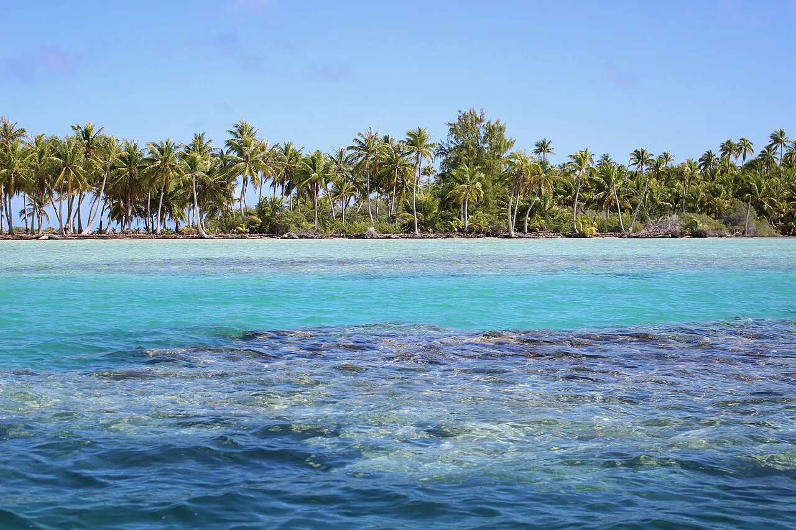

Fakarava
Tuamotu, Polynésie française · plongée, snorkeling

Réserve de biosphère UNESCO, célèbre pour son « mur de requins » dans la passe sud.
- Lieu
- Tuamotu, Polynésie française
- Niveau
- Intermédiaire
- Activités
- plongée, snorkeling
- Type d'eau
- Mer / océan
- Coordonnées
- -16.52, -145.46 (position approximative du secteur)
Dangers à connaître
- Courants de passe.
- Requins.
Le conseil d'Ocean Buddy
Réserve à l’avance : les places en pension sont limitées.
Ouvrir dans Ocean Buddy Télécharger sur l'App Store
Source : Fiche Ocean Buddy · septembre 2026 · à vérifier localement.